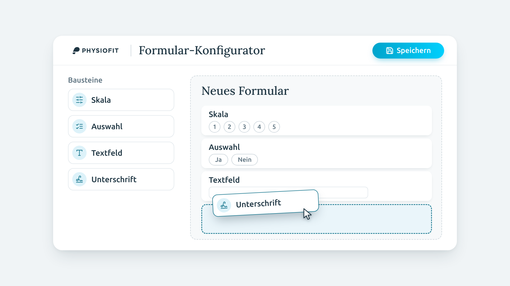
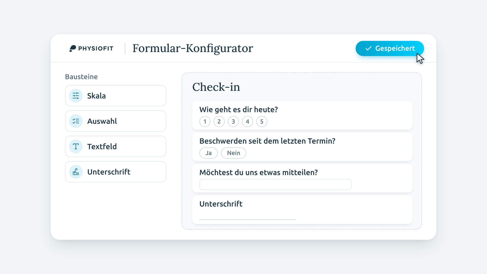
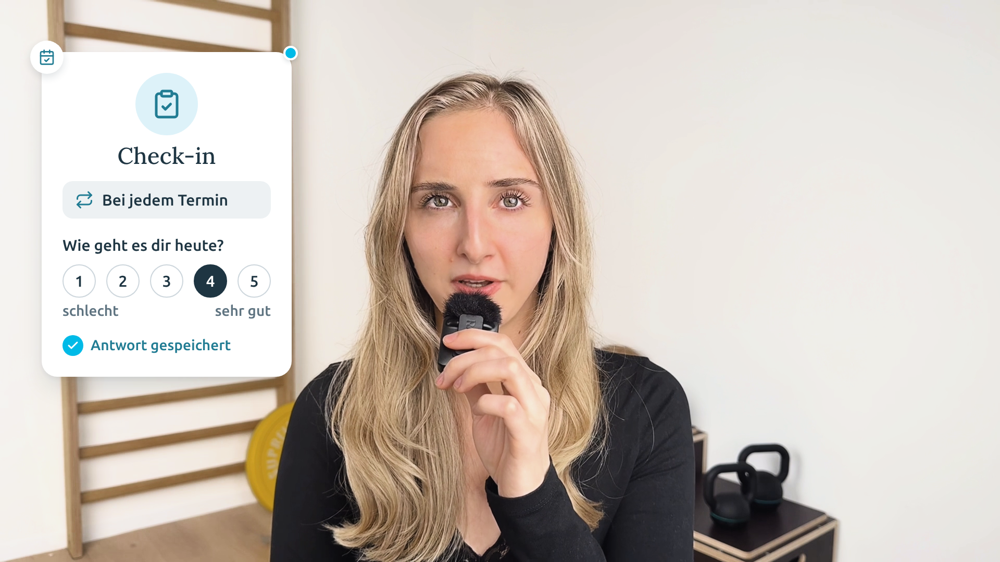
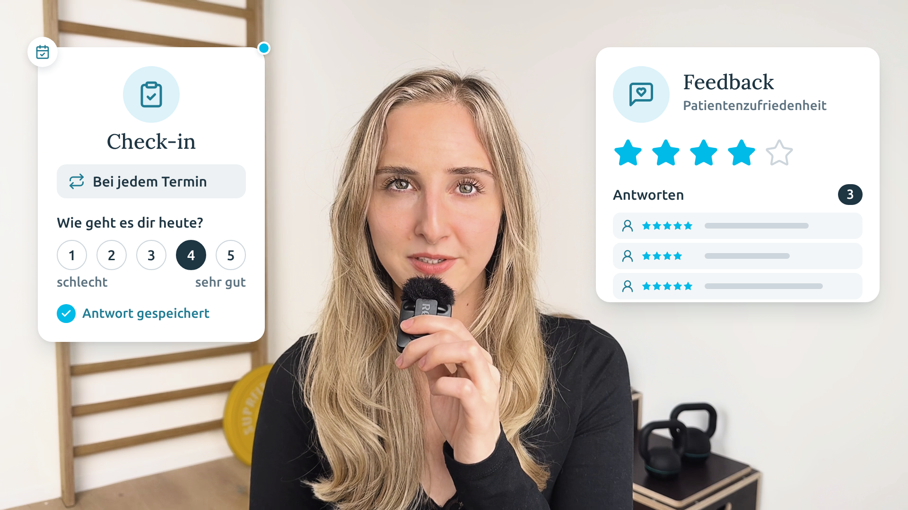

Storyboard · Patientenaufnahme Teil 7
Konfigurator für eigene Formulare: Check-in bei jedem Termin und Feedback zur Patientenzufriedenheit.

Vom ersten Bild an der Physiofit-Formular-Konfigurator, Benaja ist nicht zu sehen. Der Cursor zieht Skala, Auswahl und Textfeld nacheinander ins leere Formular, zuletzt die Unterschrift.
„Du kannst mit unserem Konfigurator auch ganz individuelle Formulare erstellen.“

Gleiches Bild, das Formular baut sich um: Der Titel wird „Check-in“, die Felder bekommen echte Fragen. Bei „erstellen“ klickt der Cursor auf Speichern, der Button wird zu „Gespeichert“.
„So kannst du zum Beispiel ein Check-in-Formular erstellen, …“

Kein Schnitt zurück zu Benaja: Der Konfigurator tritt zurück, auf demselben hellen Grund landet links die Karte „Check-in“. Rechts reihen sich die Termine auf, jeder mit seinem Check-in, „Heute“ läuft gerade. Bei „Wohlbefinden“ wird die 4 gewählt, „Antwort gespeichert“.
„… um bei jedem Termin das Wohlbefinden abzufragen, …“

Die Termine machen Platz, rechts landet die Karte „Feedback · Patientenzufriedenheit“. Die Sterne füllen sich, bei „einsammeln“ stapeln sich die Antworten und der Zähler zählt mit. Die Check-in-Karte bleibt links stehen. Benaja ist erst im nächsten Teil wieder im Bild.
„… oder allgemeines Feedback zur Patientenzufriedenheit einsammeln.“